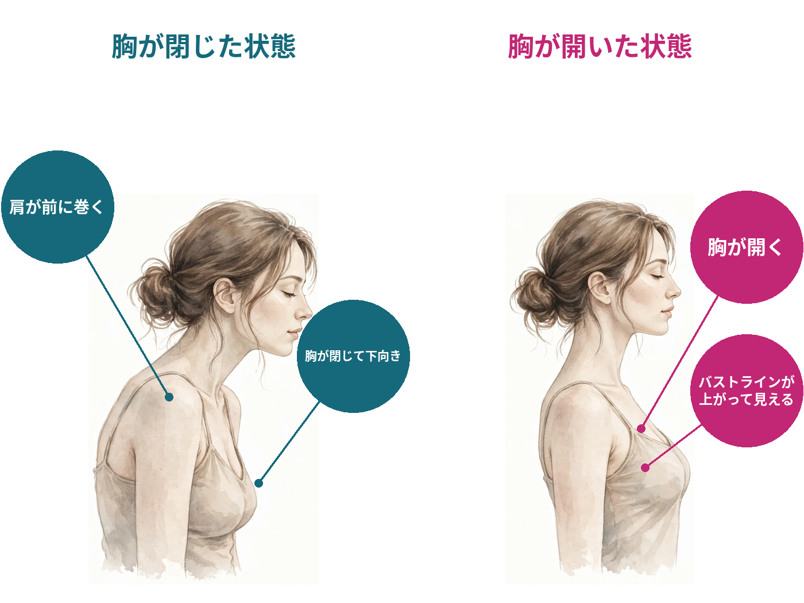

バストラインの見え方
美容整体ステラ・ポラリス東三国｜大阪市淀川区東三国・東三国駅徒歩5分・女性向け

胸を開く姿勢で、バストラインの見え方を整える
バストラインの見え方は、胸そのものだけでなく、姿勢によって大きく変わります。肩が前に巻いて胸が閉じた姿勢では、バストは下がって見え、首も短く見えがちです。反対に、胸が開いて背筋が伸びた姿勢では、同じバストでもラインが上がって見えます。このページでは、姿勢とバストラインの見え方の関係、胸が開く姿勢を目指す当サロンでのケア、ご自宅でできるセルフケアをご案内します。鏡の前で「なんだか胸元が寂しい」と感じるとき、その印象の多くは姿勢でつくられています。胸元の見え方は、毎日の姿勢の積み重ねの結果です。
ご予約はこちら（Coubic）こんなお悩みありませんか
- 鏡を見ると、胸が下がって見える気がする
- 肩が前に巻いて、胸が閉じた姿勢になっている
- 姿勢を正すと、胸の位置が上がって見える気がする
- 首が短く見えて、デコルテが埋もれて見える
- ブラジャーの跡が、夕方には苦しく感じる
- 写真の横顔で、猫背と胸の下がりが気になる
- 胸を開くストレッチをすると、息がしやすくなる
当てはまる項目が多いほど、姿勢の影響でバストラインが下がって見えやすい目安とされています。見え方は姿勢から変えられます。次のセルフチェックで、胸の開き具合の傾向を確かめてみましょう。胸元の見え方は、朝の身支度のときに鏡で確認する習慣を持つと、日々の姿勢への意識が高まります。
簡単セルフチェック（胸の開きチェック）
壁を使って、胸の開き具合を確かめる簡単な方法です。
- 壁に背を向けて立ち、かかと・お尻・背中・後頭部を壁につけます。
- そのまま、胸の前で両手を合わせ、肘を横に開ける範囲を確認します。
- 肘が開きにくい、肩が前に出てしまう場合は、胸まわりが縮んで胸が閉じやすい目安と言われています。
※これは診断ではありません。ご自身の状態の傾向を知る目安としてお使いください。
バストラインの見え方の原因と仕組み
姿勢で変わるバストの位置
バストは胸の筋肉や姿勢の影響を受けて見え方が変わります。背中が丸まると胸全体が下向きになり、バストラインは下がって見えます。反対に、背筋が伸びて胸が開くと、バストの位置は上がって見えるものです。図1のように、胸の開きひとつで、ラインの印象は大きく変わります。

図1 姿勢によるバストラインの見え方の違い、胸が開いた状態のイメージ。体の状態には個人差があります。
胸の前の筋肉の縮み
デスクワークやスマートフォンの姿勢が続くと、胸の前の筋肉は縮んだままの状態になりやすいと言われています。胸まわりが縮むと肩が内側に入り、胸が閉じた姿勢が定着します。胸の前をゆるめて開くことが、ラインづくりの土台です。デコルテの巡りが滞ると、胸元がくすんで見えたり、重く感じたりすることもあります。鎖骨まわりをゆるめることは、胸元の明るい印象にもつながります。
肩甲骨と背中の関わり
胸を開くには、背中側の肩甲骨の動きも欠かせません。肩甲骨が外側に開いたまま固まると、胸は開きにくくなります。前と後ろ、両方のバランスを整えることで、胸が開いた姿勢を保ちやすくなります。
デコルテとの一体感
バストラインの見え方は、デコルテや首の長さの見え方とも一体です。胸が開くと鎖骨のラインが現れ、首元も長く見えます。胸元全体の印象として整えていくことが、ラインづくりの考え方です。
セルフケアで足りる場合・サロンケアが向く場合
胸の閉じが軽く、ストレッチをしたあとに胸が開く感覚がある場合は、まずご自宅でのセルフケアを続けて様子を見る方法があります。一方で、胸まわりが自分ではゆるめにくい、まっすぐな姿勢を保つ感覚がつかみにくい、姿勢全体をプロの目で確認したいという場合は、サロンでのケアが向いている目安になります。サロンでは、胸まわりと背中を整え、施術後に「胸が開いた」「ラインが上がって見える」と感じやすい状態を目指します。どちらが正解というものではなく、今の状態に合わせて選ぶことが大切です。施術の前後で鏡の前で姿勢を確認する時間も設けていますので、見え方の違いを一緒に確かめられます。
当サロンでのケア
当サロンのバストラインケアは、「胸が開く姿勢で、ラインの見え方を整える」ことを目指す組み立てです。まず姿勢のクセと胸の開き具合を一緒に確認し、部位と目的に合わせて3つの手技を組み合わせます。
美容整体：肩の位置と背骨のラインを整え、胸が開きやすい姿勢の土台をつくることを目的に。背筋が伸びた姿勢の感覚を取り戻すお手伝いをします。
アロマオイルマッサージ：縮こまりやすい胸まわりや首・肩をオイルでゆるめ、胸が開きやすい状態を目指します。デコルテまで含めたケアです。
もみほぐし：肩甲骨まわりや背中側の筋肉をほぐし、胸を開く動きを引き出すことを目的に進めます。
ケアを通して目指すのは、こんな変化です。
- 胸が開いて、バストラインが上がって見える姿勢へ
- 鎖骨のラインが現れて、デコルテがすっきり見える印象へ
- 首元が長く見える、姿勢全体のバランスへ
- 背筋が伸びて、横顔のラインが整って見える姿勢へ
- 胸を開く姿勢のコツを知り、日常でも保ちやすい状態へ
施術の仕上げには、胸を開いた姿勢を保つコツや、デスクワークの合間にできる胸のストレッチもお伝えします。姿勢のクセは一日で変わるものではありませんが、開いた胸の心地よさを知ることが、日常の姿勢を見直すきっかけになります。胸元の印象は、イベントの前だけでなく、普段の姿勢の積み重ねで育ちます。

施術の流れ
ご来店後、気になる部位やお悩み、ご希望の強さなどをうかがいます。完全個室のため、周りを気にせずお話しいただけます。
姿勢のクセや胸の開き具合、肩の位置などを一緒に確認し、その日の状態に合わせた施術の進め方をご案内します。
美容整体を中心に、ご希望に応じてアロマオイルマッサージ、もみほぐしを組み合わせて進めます。強さは途中でも調整できます。
施術後の状態を確認し、ご自宅で続けやすいセルフケアのポイントをお伝えします。次回の目安についても、ご希望があればご案内します。
料金
| コース | 通常価格 | キャンペーン価格（12/25まで） |
|---|---|---|
| 80分 | 8,000円 | 3,000円 |
| 100分 | 10,000円 | 4,000円 |
| 120分 | 12,000円 | 5,000円 |
クリスマスキャンペーンは12月25日まで、ご新規様もリピーターの方も対象です。施術内容は当日の状態とご希望に合わせて組み立てます。
ご自宅でできるセルフケア
- 胸を開くストレッチ：ドアの枠や壁に前腕をつけ、体を少し前に傾けて胸の前を伸ばします。左右20〜30秒を2セット、痛みのない範囲で行ってください。
- 肩甲骨を寄せる動き：椅子に座り、両肘を後ろに引いて肩甲骨同士を寄せます。ゆっくり10回を2セットが目安です。
- タオル背中ストレッチ：タオルを背中の後ろで持ち、上下にゆっくり動かします。胸の開きを感じる範囲で、各10回行ってください。
- 姿勢のリセット：1時間に一度は立ち上がり、両手を組んで天井へ伸ばします。固まる前にほぐす習慣が大切です。
ご自宅でのケアに：セルフケア資料ライブラリ（無料）
このお悩みに合わせたセルフケアの考え方を、無料の資料ライブラリでご紹介しています。
セルフケア資料ライブラリを開く →
受診の目安
胸にしこりや痛み、皮膚の変化などがある場合は、施術の前に医療機関への受診をおすすめします。当サロンのケアは姿勢と見え方に関するもので、胸そのものの診察に代わるものではありません。気になることがあるときは、まず医療機関でご相談ください。
よくある質問
Q. 初めてでも大丈夫ですか？
はい。当サロンは完全予約制・完全個室で、1日3組までのご案内です。最初にカウンセリングで姿勢のクセや気になる部位をうかがい、無理のない内容から始めます。施術の前後で「胸が開いた」「背筋が伸びた」といった姿勢の感覚の違いを一緒に確認しながら進めますので、初めての方も安心してご利用いただけます。
Q. 施術は痛いですか？
強さは、ご希望をうかがいながら調整します。デコルテまわりはやさしい圧を基本に、胸まわりの縮みをゆるめていきます。感じ方には個人差がありますので、施術中も遠慮なくお声がけください。
Q. コースはどう選べばいいですか？
80分・100分・120分のコースがあり、ケアしたい部位の広さやお時間のご都合に合わせて選べます。胸まわりから背中、骨盤まわりまで全身をゆっくり整えたい方には、100分が選ばれることが多いコースです。迷われる場合は、ご予約の際にお気軽にご相談ください。
Q. 場所と予約方法を教えてください。
大阪市淀川区東三国、東三国駅から徒歩5分です。完全予約制のため、予約サイト（Coubic）またはLINE公式アカウントからご予約をお願いしています。
Q. 男性も受けられますか？
当サロンは女性向けのため、男性の方は、同じ東三国の男性専用整体院「北辰堂」をご案内しています。
施術者について
平賀建人（施術歴30年）
鍼灸師・登録販売者・アロマセラピスト・パーソナルトレーナーの資格を持ち、美容整体を中心に、アロマオイルマッサージ、もみほぐしを、その日の状態とご希望に合わせて組み合わせて施術します。このページの内容は、施術者の知識と経験をもとに作成しています。

料金・ご予約
ご新規様もリピーターの方も 12/25まで
80分 3,000円／100分 4,000円／120分 5,000円
通常価格は80分8,000円／100分10,000円／120分12,000円です。施術内容はご希望に合わせて組み立てます。
営業時間：月〜土 17:00〜23:00／日 10:00〜23:00（完全予約制）｜電話：080-2468-3086
大阪府大阪市淀川区東三国2丁目25番4号101（東三国駅徒歩5分）